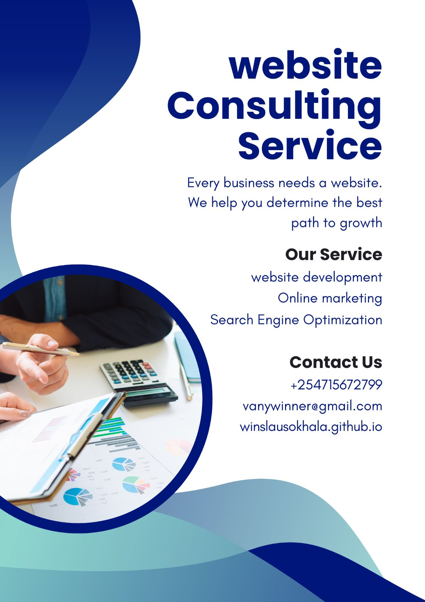

Why every business needs a website, from the roadside shop to the growing company
Business
Many small businesses in Kenya start on WhatsApp and social media, and that works well at the beginning. The problem comes when a business wants to grow. Social pages belong to the platform, their reach can change overnight, and they don't show up in a search the way a proper website does.
A website works as a shop front that never closes. A customer searching on their phone late at night can find your services, prices and location without waiting for a reply. For many shoppers, a business with a website simply looks more established than one without.
Search is the second big reason. When someone types what they need into Google, a website with clear, useful pages gives your business a chance to appear. A social media profile rarely gets that same visibility, and every visitor who finds you through search is a customer you didn't have to chase.
A website also lets you own your audience. You decide the layout, the message and the contact details, and you can collect enquiries directly without depending on an algorithm. It can also take payments. Sites can connect to M-Pesa through Safaricom's Daraja API, so customers can pay for orders or bookings on the spot.
Finally, a website gives you information. Simple analytics show how many people visit, which pages they read and where they come from, so you can improve your services based on real behaviour instead of guesses.
You don't need a large budget to start. A small business can begin with a simple, mobile-friendly site that has a clear description of what it does, its prices or packages, a contact page and a map, then add features as it grows. The key is to choose a site that can grow with the business, so you aren't forced to rebuild later.
Disclosure: Vanywinner offers website development, online marketing and SEO services. For enquiries, call +254 715 672 799 or email vanywinner@gmail.com.